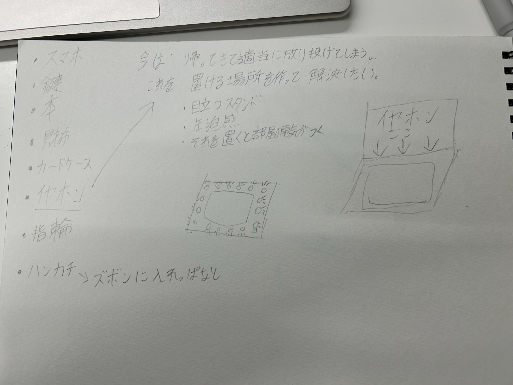
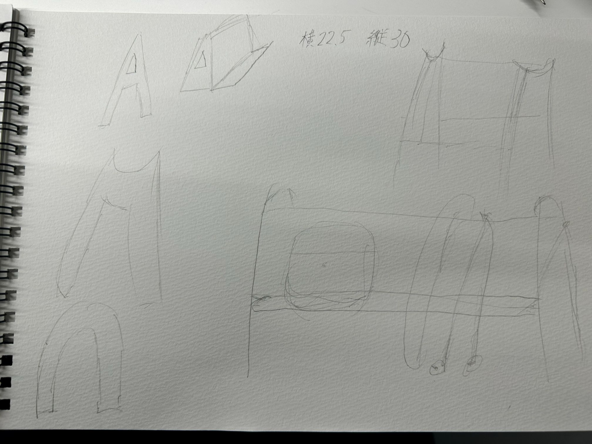
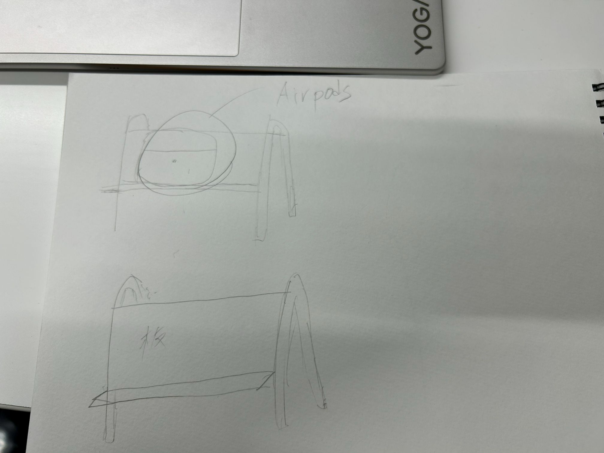
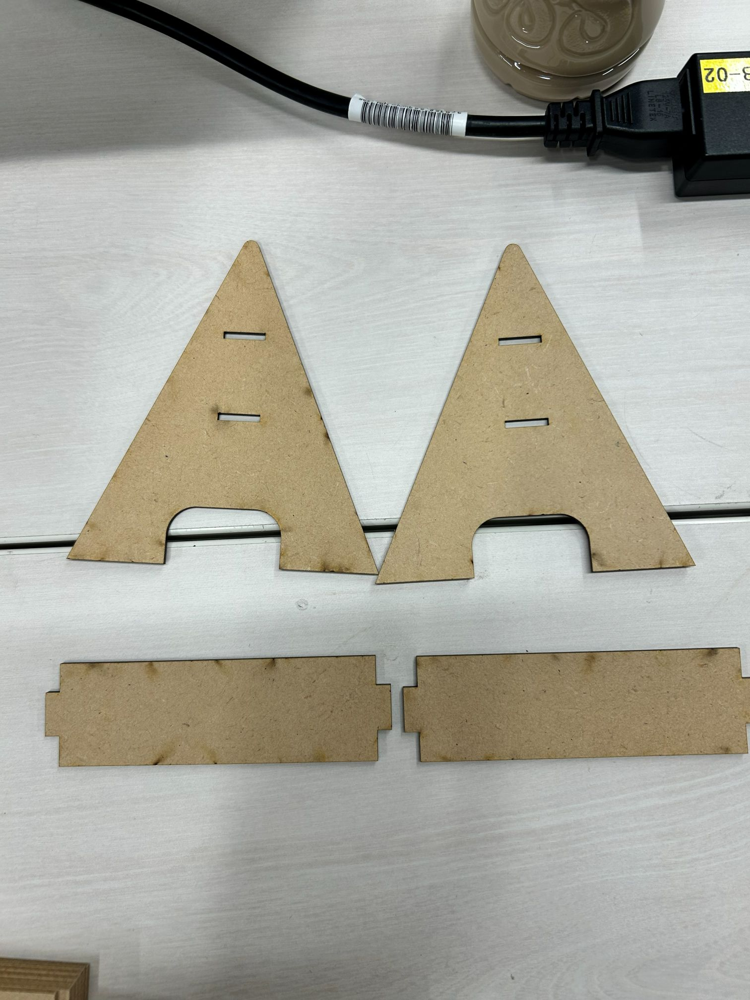
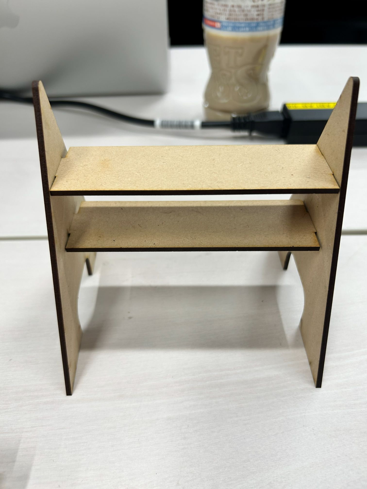

レーザーカッティング
思考の過程

失くしやすいものや適当においてしまう物の置き場になるものを作りたいと考えた。
スケッチ


最初は板を斜めにつけてその下にはめ込みの板をつけて作ろうとしていたが、
その作り方が難しいと感じたのと、組み立てた際に不安定になってしまうと考えたため断念した
製作過程

はめ込みなどがあったため寸法などをちゃんと使って大きさを計算した。
MDFの厚さ2.5mmに対して、穴の寸法を15mm×2.45mmに設定
左右でずれないように三角形の部分とはめ込みの板を一個ずつ作ってから、それをコピーした。
実際の作品


組み立てた時に不安定な感じがあったので後日はめこみのところにボンドを縫って補強した。
設計ファイル
設計ファイル作品の説明と作ろうと思った経緯
以前までは家に着いたときにポケットに入っているものを出して、適当に放り投げていて、物がなくなることが多かった。
その関係を変えようと思って、小物置きを作ろうと思った
製作過程であった失敗
- 物を置く板の幅が狭いので、置くときにも気を使ってしまうため、使わなくなりそう。